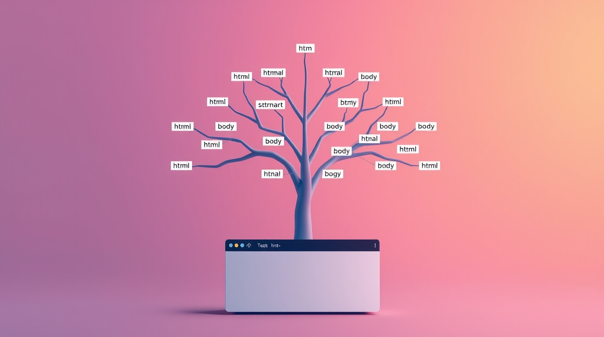
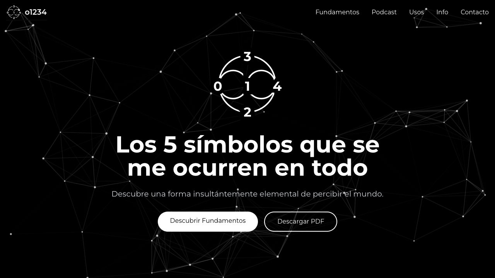
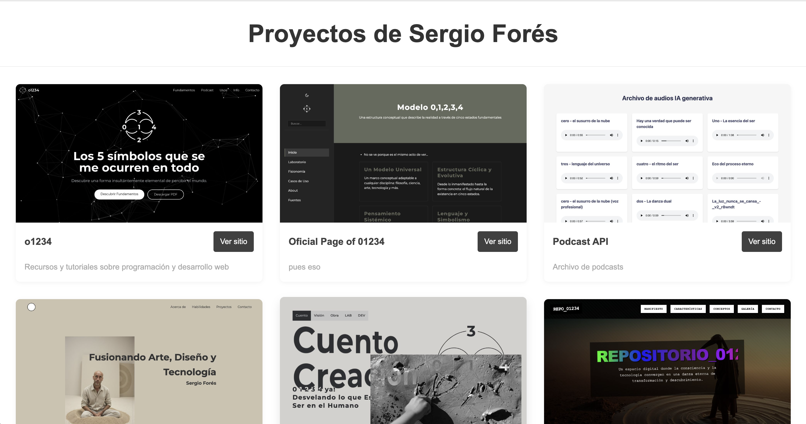

Enlaces a otros proyectos
-
Ver sitio web
Desarrollo Web
Fusiono código y creatividad para construir experiencias digitales impactantes, donde la funcionalidad se encuentra con el diseño experimental.
-
Ver sitio web
+0+1234
Un espacio para el descubrimiento personal, donde cada idea se convierte en un viaje a nuevos horizontes, desafiando los límites de lo convencional.
-
 Ver sitio web
Ver sitio webObra plástica
Mi faceta como artista plástico y visual se plasma en obras que combinan sensibilidad y técnica, invitándote a ver el mundo con otros ojos.
-
Ver sitio web
Github Playground
Un entorno de experimentación constante, donde pruebo y desarrollo ideas en un laboratorio digital.